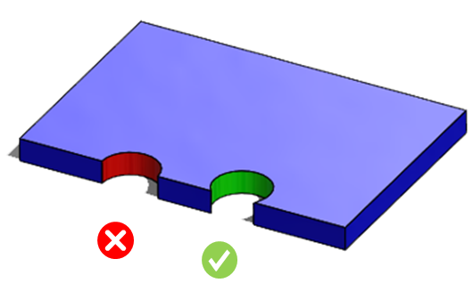
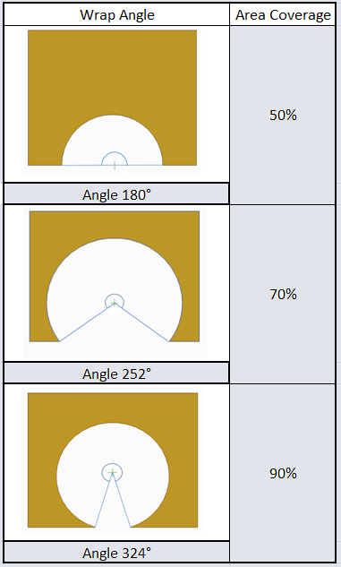

フィーチャーの側面と交差する場合、穴はその面積の少なくとも 75% が材料内に収まるように作成しなければなりません。
穴の大部分が材料の外側にある状態で穴あけ加工を行うと、ドリルがぶれやすくなり、部品品質に影響を与える可能性が高くなります。また、ドリルビットが破損する可能性も高くなります。
穴軸が材料のエッジ上、またはエッジ付近にある場合、この問題はさらに深刻になります。
部品エッジ上に穴を作成することは避けてください。
部品エッジ上に穴を作成せざるを得ない場合は、穴の 75% が部品内部に配置されていることを確認してください。
このルールでは、穴の何％（または面積）が材料内に存在する必要があるかを設定することができます。

面積カバレッジは、穴の巻き付き角度に基づいて計算されます :

注記：
ドリル工具はデータベースで設定されています。ルールマネージャーダイアログボックスでドリル径を確認するには、標準穴サイズを編集してください。
解析では、標準穴サイズのルール構成で選択されている単位選択オプションに基づき、最大ドリル工具径が考慮されます。